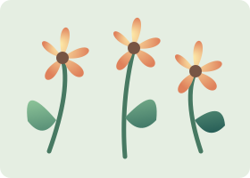

A little garden worth coming back to. Change the flowers, explore the page, and return. The private postcard keeps its own season.
The flowers share their colors with the garden next door.
Apricot afternoon.
The same drawing, at the same size. Both gardens should change and return together.
Two smaller views of the shared garden. Try 25%, 100% and 400%, then come back to your favorite size.

This separate SVG image keeps its apricot flowers when the page changes. Its sky follows light and dark pages.